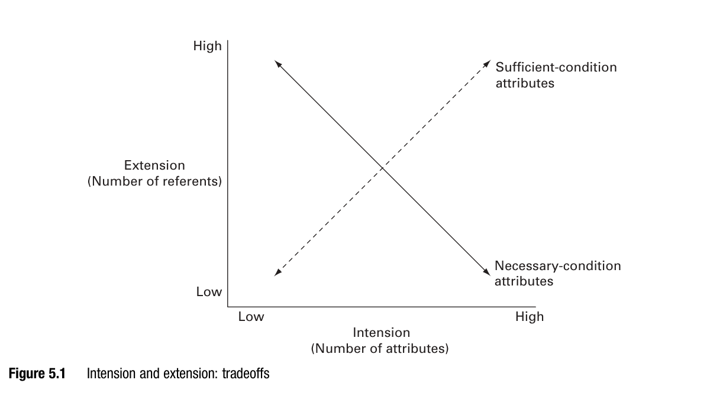

What are we even talking about?
We built explanations of a forum where “participants became more tolerant.”
We never once asked: what do we mean by tolerance?
Running exercise: What is social media? Give a one-sentence definition. Name one clear example and one borderline case.
Descriptive claim: “Participants became more tolerant.” Tolerant of what, exactly?
Causal claim: “Education increases tolerance.” Which of several different things called “tolerance”?
A vague concept doesn’t just weaken an explanation — it can make it impossible to state.
This isn’t hypothetical: it’s the actual state of “affective polarization” research. See Druckman & Levendusky (2019), Public Opinion Quarterly.
Sentence: “A competent journalist writes clearly.”
Five words. Four concepts: journalist, competence, writing, clarity.
“A,” “the,” and other function words are linguistic terms, not concepts.
Process concepts are a special subcategory of mega-concepts (p. 17).
Using our own Week 2 vocabulary:
Necessary-condition attributes: more intension → less extension.
Democracy = “free and fair elections” and “civil liberties”?
Fewer countries qualify than under “free and fair elections” alone.
Adding requirements can only narrow — never widen — who counts, when each requirement is necessary.

Adding necessary attributes narrows membership. Requiring elections and civil liberties admits fewer countries, or the same number.
Our working definition so far: social media = a platform for publishing user-generated content to others.
Now add a second necessary condition: …and organizes what users see via an algorithmic feed.
Sounds like a claim. Is it testable?
Our definition: Does listing familiar platforms tell us what makes a new service social media?
Concept explication is the eighth approach — it doesn’t discard these seven, it disciplines them.
What’s wrong here — and how is it different from ordinary disagreement about democracy?
Bad: “democracy: a furry, four-legged animal” — pure stipulation, zero shared usage.
Good: democracy as “rule by the people” — every competing definition still revolves around this core.
Resonance: how faithful is the concept to established usage?